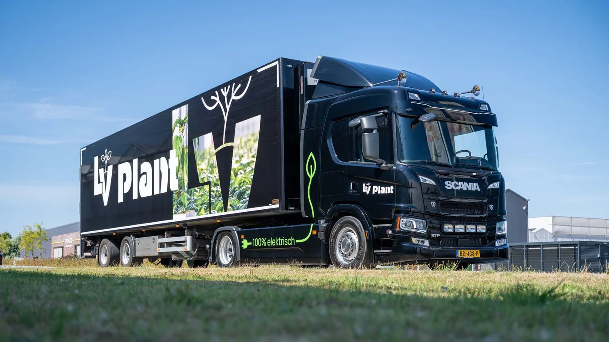

La productora neerlandesa Vilosa puso en servicio su primer camión totalmente eléctrico, un Scania 27P 4x2. La unidad transporta plantas desde Vilosa y LV Plant, principalmente dentro de Países Bajos, con un semirremolque urbano. La empresa también atiende clientes en Alemania dentro de una operación diaria.
Vilosa integra Unique Growers Company junto con otras cuatro firmas hortícolas. El conjunto reúne aproximadamente 40 hectáreas de cultivo y 200 trabajadores. Esa escala ayuda a comprender por qué la transición no se resolvió comprando solamente un vehículo: era necesario coordinar recorridos, carga, instalaciones y conductores.
El recorrido definió el vehículo
La empresa comparó diferentes marcas y señaló tres factores decisivos: autonomía, comodidad para el conductor y acompañamiento del concesionario. El 27P se destina sobre todo a viajes nacionales, un ciclo más previsible que una ruta internacional abierta y adecuado para regresar a una base con cargadores propios.
La previsibilidad es central en electromovilidad. Una flota debe conocer kilómetros, desnivel, velocidad, carga, clima, tiempos de espera y consumo de equipos auxiliares. La autonomía de catálogo es apenas el comienzo; el margen operativo debe contemplar desvíos, congestión y degradación futura.
Una cabina pensada para muchas paradas
Los conductores participaron de la selección y valoraron el acceso bajo de la cabina P. En distribución, subir y bajar varias veces por jornada convierte la altura de los escalones y la apertura de puertas en variables productivas y de seguridad.
La posición de manejo, la visibilidad y el menor ruido de la propulsión eléctrica también influyen en la fatiga. Un camión sustentable que resulta incómodo termina dificultando la adopción interna. Incluir a quien conduce antes de cerrar la compra permite detectar esos problemas temprano.

Un centro de carga de 480 kW
Vilosa instaló en su predio un centro con 480 kW de capacidad. La infraestructura es de acceso público y ya es utilizada por empresas vecinas. Esa apertura permite aprovechar mejor una inversión que, de otro modo, podría permanecer ociosa fuera de las ventanas de carga propias.
La potencia total no significa que cada camión reciba 480 kW todo el tiempo. El reparto depende de cargadores, conexión, estado de batería y gestión energética. Para una flota es más útil diseñar cuánta energía debe recuperar cada unidad durante una pausa que perseguir únicamente el pico máximo.
La instalación también necesita protecciones, señalización, espacio de maniobra, mantenimiento y un procedimiento ante fallas. Un cargador indisponible puede inmovilizar el vehículo aunque su mecánica esté en perfecto estado.
La electricidad dentro de una estrategia mayor
La empresa reutiliza en sus invernaderos dióxido de carbono procedente de la producción de hidrógeno, obtiene parte del calor mediante geotermia y migró a iluminación LED. Según Vilosa, estas medidas redujeron entre 30% y 40% el consumo de gas natural y también disminuyeron la demanda eléctrica.
El camión se integra así a una política energética, no a una acción aislada. La lección es relevante: electrificar transporte funciona mejor cuando la compañía conoce su consumo, puede producir o contratar energía y coordina la carga con el resto de la planta.
Qué cambia en el mantenimiento
- Batería: observar temperatura, estado de carga, alertas y comportamiento entre recorridos semejantes.
- Refrigeración: mantener limpios circuitos y radiadores que protegen batería, electrónica y motor.
- Frenos: la regeneración reduce uso, pero no elimina corrosión, agarrotamiento ni inspecciones.
- Neumáticos: el par inmediato y la masa pueden acelerar desgaste si presión y alineación son incorrectas.
- Alta tensión: delimitar tareas y capacitar personal antes de intervenir componentes identificados.
- Cargadores: registrar errores y revisar conectores, cables, ventilación y protecciones eléctricas.
Una segunda unidad ya encargada
El proyecto avanzó desde conversaciones con Scania Maasdijk hasta un análisis económico concreto. Vilosa no sólo incorporó el primer 27P: ya pidió otro. Eso sugiere que la empresa encontró un ciclo repetible y una infraestructura con capacidad disponible.
El caso corresponde a Países Bajos y no anuncia disponibilidad ni condiciones comerciales para Argentina. Aquí, distancias, tarifas eléctricas, red y temperatura son diferentes. Sin embargo, el método sí sirve: seleccionar una ruta controlable, medirla, asegurar carga en base y escalar después de obtener datos.
Cómo comparar el costo total
El precio inicial de un eléctrico suele ser mayor, mientras que energía y mantenimiento pueden comportarse de otra manera que en un diésel. La comparación debe incluir vehículo, cargadores, obra eléctrica, financiación, seguro, valor residual y cualquier tiempo improductivo. También hay que modelar cuántos años y kilómetros se aprovechará la inversión.
La energía debe calcularse con tarifas y horarios reales. Si la carga puede desplazarse fuera de los picos o coordinarse con generación propia, el resultado cambia. A la inversa, una ampliación de potencia no prevista puede aumentar costos y plazos antes de que el primer camión comience a trabajar.
Un plan para cuando algo sale distinto
La operación necesita alternativas ante un cargador fuera de servicio, un recorrido más largo o una unidad que regresa con menos batería de la esperada. Puede reservarse otro punto de carga, reasignar una ruta o mantener capacidad de respaldo. Esa planificación no implica desconfianza en la tecnología; es la misma disciplina con la que se gestiona combustible y mantenimiento.
Registrar consumo por viaje permite ajustar el plan con datos de estación, carga y conductor. Con el tiempo, la flota puede anticipar cuánta energía necesitará y programar las recargas sin afectar despachos ni vida útil de la batería.
Más que cambiar diésel por baterías
La experiencia de Vilosa muestra que la transición tiene cuatro piezas: vehículo, conductor, cargador y operación. Si una falla, la productividad se resiente. Por eso la comparación incluyó servicio y colaboración, además de autonomía.
Para flotas argentinas interesadas en electrificación, el primer paso razonable no es elegir una marca, sino construir un perfil de misión. Con kilómetros, toneladas, pausas y energía disponible sobre la mesa, la tecnología puede evaluarse con criterios de trabajo reales.